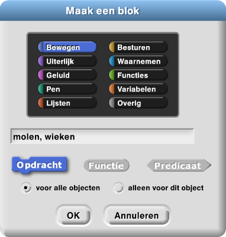
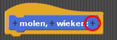
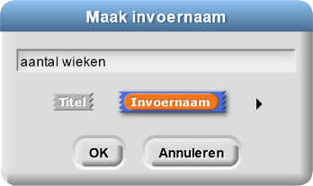
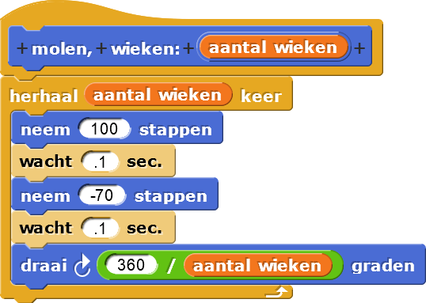
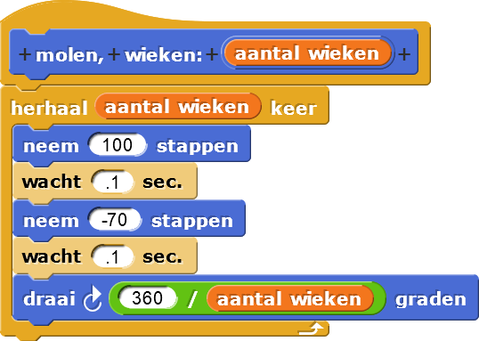

Blokken met Invoer

Op deze pagina, ga je verschillende plaatjes maken (zoals hierboven) met een enkel blok
met een invoerveld:  . Met invoervelden kun je een blok heel verschillende dingen laten doen.
. Met invoervelden kun je een blok heel verschillende dingen laten doen.
-

Maak 5 kopieën van dit script en pas ze zo aan dat de molens 3, 4, 5, 6 en 12 wieken krijgen.


De scripts zijn eigenlijk allemaal hetzelfde: alleen de invoerwaarde is anders. In plaats van veel
verschillende scripts, kun je een algemener script maken die ze allemaal kan tekenen. Je molen
heeft een invoerveld nodig om aan te geven hoeveel wieken je wil,  net zo als het
net zo als het
ga naar blok invoervelden heeft voor x en y waarden  .
.
Debug-Tip: Opmerkingen bij je code
Door opmerkingen bij je code toe te voegen herinner je je makkelijker hoe je code werkt, het helpt anderen je code te begrijpen. En het helpt je bugs te voorkomen doordat je je code ermee verduidelijkt. Dit filmpje laat zien hoe je opmerkingen in Snap! toevoegt met een rechts-klik (of control-klik) op het scripts werkvlak, waarna je kunt kiezen voor " opmerking toevoegen".
Merk op dat een opmerking die je toevoegt aan een hoed blok ook wordt gebruikt voor de helptekst van zo'n zelfgemaakt blok.
- Maak een
molenblok met een invoerveld voor het aantal wieken. De uitleg staat hieronder en na de uitleg zie je ook een korte video die laat zien hoe je het doet.Maak een blok met invoerveld
- Typ de naam van het blok en de naam van de invoer in het
dialoogvenster van "Maak een blok…", en klik OK. In dit project, typ
molen, wieken:
- Dit blok gaat over het bewegen van je sprite, je kunt kiezen voor het blauwe Bewegen-palet. Of kies niets dan wordt je blok grijs.
- Het gebruik van komma's en dubbele punten is niet verplicht; ze staan hier om het duidelijker te maken.
- Klik op + (plus teken) achter de naam van je invoer, typ de naam van je
invoer, en klik OK om een variabele invoer aan te maken. Voor
molen, klik de + na "wieken:" en typ aantal wieken als de naam van je invoervariable.
  - Sleep de blokken die je nodig hebt, en gebruik je nieuwe invoerveld.
- Hier kun je een van je eerdere molen-scripts naar het venster te slepen waar je
je blok maakt, en klik het vast aan je
molenblok. - De naam van de invoer zoals aantal wieken, die je bij de aanmaak van je blok maakt. Dit heet een parameter (of formele parameter).
- De waarde van de invoer zoals 6 voor een zeshoekige molen, die bij ieder gebruik van het blok gevarieerd kan worden. Dit noemen we een argument (of actueel argument).
- Vervolgens, sleep het nieuwe invoerveld aantal wieken om de getallen te vervangen zodat het script meer algemeen gebruikt kan worden.
We gebruiken het woord "invoer" voor twee verschillende maar verwante ideeën:
 

- Hier kun je een van je eerdere molen-scripts naar het venster te slepen waar je
je blok maakt, en klik het vast aan je
- Typ de naam van het blok en de naam van de invoer in het
dialoogvenster van "Maak een blok…", en klik OK. In dit project, typ
- Voeg opmerkingen toe aan de code zoals je boven leerde bij de Debugging Tip.
 Bewaar je werk als
H1L3-Molen.
Bewaar je werk als
H1L3-Molen.
- Deze plaatjes zijn gemaakt met het
molenblok enmaak penkleur. Maak je eigen kunst.


- Maak de animatie zoals boven aan deze pagina te zien is.